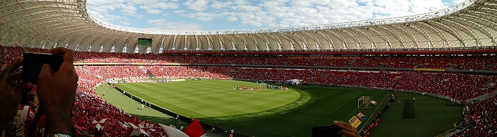

Curiosidades sobre o Inter
O Internaconal foi fundado no dia 4 de abril de 1909 por Henrique Poppe e seus irmãos,José Eduardo e Luiz Madeira.
A origem do Sport Club Internacional está associada à integração entre povos de diferentes nacionalidades. Ao contrário dos outros times da capital gaúcha naquela época, voltados sobretudo a descendentes de alemães, o Inter nascia receptivo a variadas etnias.
Três irmãos foram os responsáveis diretos pela fundação do Clube: Henrique Poppe Leão, José Eduardo Poppe e Luiz Madeira Poppe. Eles chegaram em Porto Alegre por volta de 1908, época em que a prática do futebol efervescia pelo Brasil.